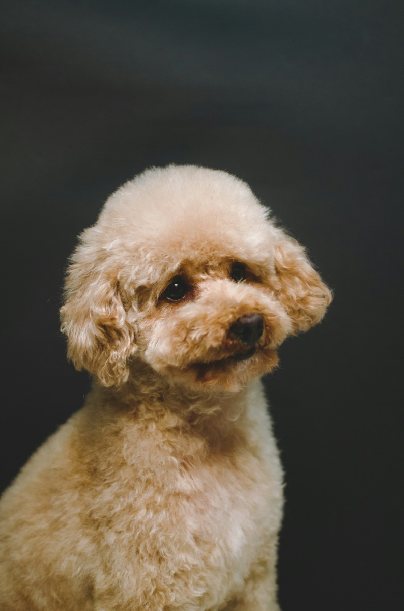

Knippen & trimmen
Een model dat past bij de vacht en het dagelijks leven van jouw hond. Bespreek de mogelijkheden voor zijn vachttype.
JOUW TRIMSALON IN OPIJNEN
Voor die fijne, frisse vacht.
En een hond die weer lekker zichzelf is.
Met aandacht voor jouw trouwe viervoeter.

EEN VERZORGDE VACHT
Geen vacht is hetzelfde. De juiste verzorging begint bij wat jouw hond nodig heeft. Dit zijn onderwerpen om met Bianca te bespreken.
Een model dat past bij de vacht en het dagelijks leven van jouw hond. Bespreek de mogelijkheden voor zijn vachttype.
Van een opfrisbeurt tot aandacht voor losse haren en klitten. Welke verzorging past bij jouw viervoeter?
Een fijne vacht vraagt ook thuis om aandacht. Neem je vragen over borstelen en onderhoud mee naar de salon.
HET GEZICHT ACHTER KNIPPIE
BiancaRademacher.
Trimsalon Knippie · OpijnenTrimsalon Knippie is de trimsalon van Bianca Rademacher in Opijnen. Een plek waar de verzorging van jouw hond centraal staat.
Een frisse vacht, een passend model en aandacht voor je viervoeter. Dat is het idee achter onze naam én onze slogan: van knip naar knap.
Maak kennis met de salonHANDIG OM TE WETEN
Goed voorbereid naar de trimsalon.
Trimsalon Knippie is gevestigd aan De Richtershof 22, 4184 EW Opijnen, Nederland. Bianca Rademacher is de eigenaresse.
De prijs is afhankelijk van onder andere het vachttype, de grootte van je hond en de gewenste verzorging. Vraag Bianca naar de mogelijkheden en de prijs voor jouw hond.
Laat je hond vooraf even uit en vertel bij het maken van een afspraak over bijzonderheden, gevoeligheden of klitten. Overleg met Bianca of verdere voorbereiding nodig is.
Dat verschilt per hond en vachttype. Bespreek met Bianca welk ritme bij jouw hond past en hoe je de vacht tussendoor kunt verzorgen.
TRIMSALON KNIPPIE · OPIJNEN
Voor vragen over de verzorging van jouw hond
kun je terecht bij Bianca Rademacher.
Bianca Rademacher
De Richtershof 22, 4184 EW Opijnen
KvK: 42050237
Telefoonnummer en e-mailadres volgen binnenkort.